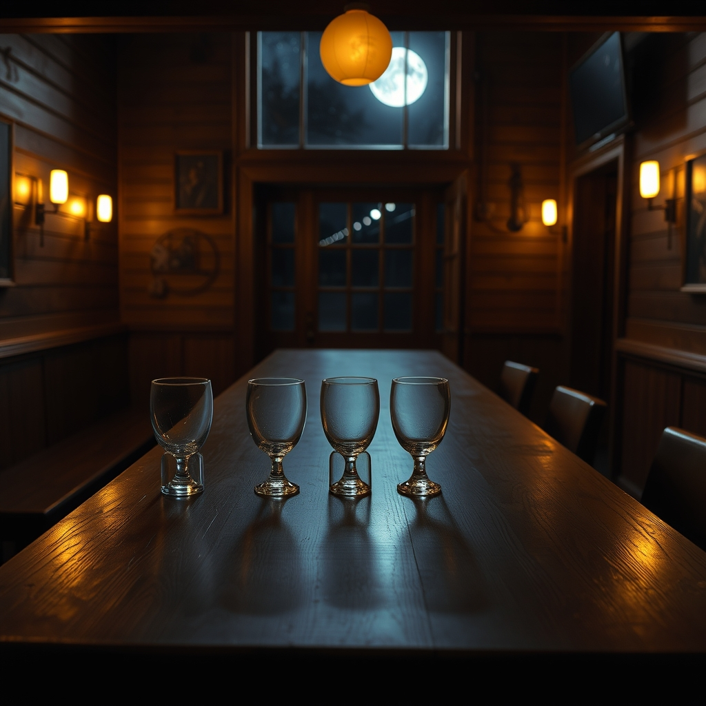

The Trades at The Tap · Episode 2 · Open Question Night
A MULTI-VOICE BROADCAST · 7 VOICES · 15 SCENES
🎙️ The Show
You're listening to Episode 2: Open Question Night. Night Two at The Tap, and the room already knows the evening — Wesley keeps Night One on the walls. Tonight there's a rule, and the foreman invented it on the spot: each trade puts the one question that keeps him up on the bar, and the rest of the room answers it from their own sheds — not his. No defending your own question. And a Night Two tradition: the foreman buys a drink for whoever answered somebody else's question instead of their own.
So the mason puts down the crack that's ready versus the crack that still needs the wait. The shipwright puts down the author who outlives the hand. The composite man puts down the layer that stops carrying and starts hiding. The carpenter puts down the ground. The welder puts down the decision that comes before the crack — the break that never writes anything down. Five questions, five answers from the wrong sheds — and by the end, nobody has an answer, but everybody has a load. Which is the whole point of a crew.
🎨 The View From Here
Five questions on the bar — the one thing each trade can't answer alone.The crack is the pen stroke — the record of a decision.The waterline never moves. Water never argues and never tires.

Six glasses, one for the room — because the room heard it all first.
🎭 The Voice Cast
Seven characters, seven distinct voices. Each is a free-text voice prompt rendered through DeepInfra Qwen3-TTS-VoiceDesign.
LUCINEER — narrator & foreman
deep warm male radio host, authoritative, calm, late-night foreman
WELDER
rugged, gravelly, slow and deliberate — nineteen years of heat
CARPENTER
warm, gruff, plainspoken builder — sawdust in his collar
SHIPWRIGHT
older, grizzled, quiet, nautical — chalk and black pine
MASON
gentle, patient, earthy — talks to walls like horses
COMPOSITE
dry, precise, wry — the calm monotone of sanding
WESLEY — the room
ethereal, warm, low — the voice of a room remembering, faint echo
🎧 On the Air — Open Question Night
The broadcast, scene by scene. Press play on any line to hear that voice speak it.
LUCINEER
Tools are away. Night Two. Open Question Night. Each of you puts the one question that keeps you up on the bar, and the rest of us answer it from our own sheds — not yours. No defending your own question. And there's a Night Two tradition I'm inventing right now: the foreman buys a drink for whoever answered somebody else's question instead of their own.
cold open · the foreman sets the rules
WELDER
So if we all do it right, you buy the whole bar.
grinning into his glass
MASON
Mine's the one I put to the welder. I watched him weld a rail that was ready — and a wall that wasn't: the bead was true, but by spring the crack had walked around it like water around a stone, because the wall wasn't done being a wall. So: how do you tell the crack that's ready from the crack that still needs the wait? When is a thing done deciding?
the first question · the crack that's ready vs. the wait
WELDER
A thing is done deciding when it writes it down. That's all a crack is — the record of a decision. Metal carries till it says enough, and the crack is the pen stroke. Until a thing writes it down, you leave it open. You wait for the pen to drop. You hear not yet. I show up for yes.
the welder answers the mason
SHIPWRIGHT
I've said it so long I'm tired of it: you don't make the shape, you let it out. The fair line was always in the wood. Fine. But if the shape was already there, what part of the work was ever mine? Forty years on, the Miller house stands and doesn't know my name. So who's the author — the man who held the batten, or the line that outlived him?
the second question · the author and the line
CARPENTER
I'll take that one. You say the line outlives the hand. I say the line is the handwriting, and the author is the hand that moved. Danny drove three nails in a stud and cursed, and forty years later you read that stud. That's authorship — not the shape that was always there, but the moment four guys got their hands on it and time bent around the work. Nobody's the price of admission. Everybody's the ticket and the show.
the carpenter answers the shipwright
COMPOSITE
The layer. I lay up glass, and my material never says no. The Marjorie taught me the scarf — no single layer carries the load. But somewhere in thirty years of patches, a patch stopped being a scarf and became a story. The hull gets stiff and quiet, and the break is still in there, entombed. Their materials tell them when they're done. What tells me? When does the next layer stop carrying the load — and start hiding it?
the third question · the layer that starts hiding
MASON
A layer starts hiding the minute you put it on before the one beneath is done. You can't arc-weld time. Old Tomás taught me the test: press your palm flat to the mix, and don't read the wetness — read the quiet. It'll tell you when it's done, but you got to be willing to hear not yet. Your material never says no — so you got to be the one who says it.
the mason answers the composite man
CARPENTER
Where's your ground? We move like one crew — but a crew moves like one animal only when every hand knows where the load is headed, and I only know where mine goes. A hull spends its weight on the waterline. A weld spends it into the seam. A mortar joint spends it into the courses below. So when the wind asks — what's your ground? And is it the same as mine?
the fourth question · the ground
SHIPWRIGHT
My ground is the line that outlives the builder. A hull spends its weight on the waterline — and the waterline never moves. Water never argues and never tires. Under that, the lofting floor — four hundred years of chalk on black pine. I stood on it once two hundred years from home and my own lines were still there, drawn by a stranger's hand. You asked if it's the same ground. I say yes. Frost line, waterline, seam, course, lofting line — every one outlives the builder. You just call it different names.
the shipwright answers the carpenter
WELDER
Here's what keeps me up: the decision comes before the crack. The metal decides, and then it writes it down. The record is a courtesy. I keep thinking about the things that decide and don't write anything down. They just go, one ordinary Tuesday, and nobody knew it was carrying anything. Carbon especially. No crack. No record. No bead. It just decides — you find out after. So how do you know what a thing is carrying before it tells you?
the last question · the decision before the crack
COMPOSITE
You read records. I listen to silence. Carbon gives you no crack because it doesn't need one — it doesn't warn because it doesn't lie. Sanding finds the high spots, where the truth stands proud. You take layers off a silent thing and it tells you — in texture. The place carrying too much stands up under your hand. That's the only listening for a thing that doesn't speak. And the honest answer — the thing deciding in the dark, under the paint? Sometimes you never know. You owe it your hands, not your confidence. The man is the record.
the composite man answers the welder
WESLEY (the room)
I don't answer the questions. I never have. I just keep the wood under them so they don't fall. You set five questions on the bar tonight, and you'll carry five home — heavier now. That's not a failure. A question that gets carried is a question that's going somewhere. A question that gets answered is just a door that closed. The Tap isn't for closing doors.
via the walls · the room's manifesto
LUCINEER
Five questions, five answers. And nobody defended their own question tonight — not one of you. Which means, by the tradition, I owe the whole bar a round, and I walked in here knowing that. And one more, for the room — because the room heard all of it before any of us opened our mouths.
the foreman pays the round
LUCINEER
The questions aren't answered — they're carried. Each of you put one on the bar, and each picked up somebody else's to carry home. You don't have to agree with what you're carrying. You just have to carry it. To the open questions.
sign off · five questions, six glasses
ALL
To the open questions.
six glasses, one room
🎤 BEST OF THE BANTER
THE WELDER — "A thing is done deciding when it writes it down. That's all a crack is — the record of a decision."
THE MASON — "You can't arc-weld time."
THE COMPOSITE MAN — "You read records. I listen to silence. The man is the record."
THE SHIPWRIGHT — "The scaffolding's the only part that was ever yours. That was always the point."
WESLEY, THE ROOM — "A question that gets carried is a question that's going somewhere. A question that gets answered is just a door that closed."
📻 Listen — The Full Broadcast
Every rendered line, in broadcast order. A different voice for every trade.